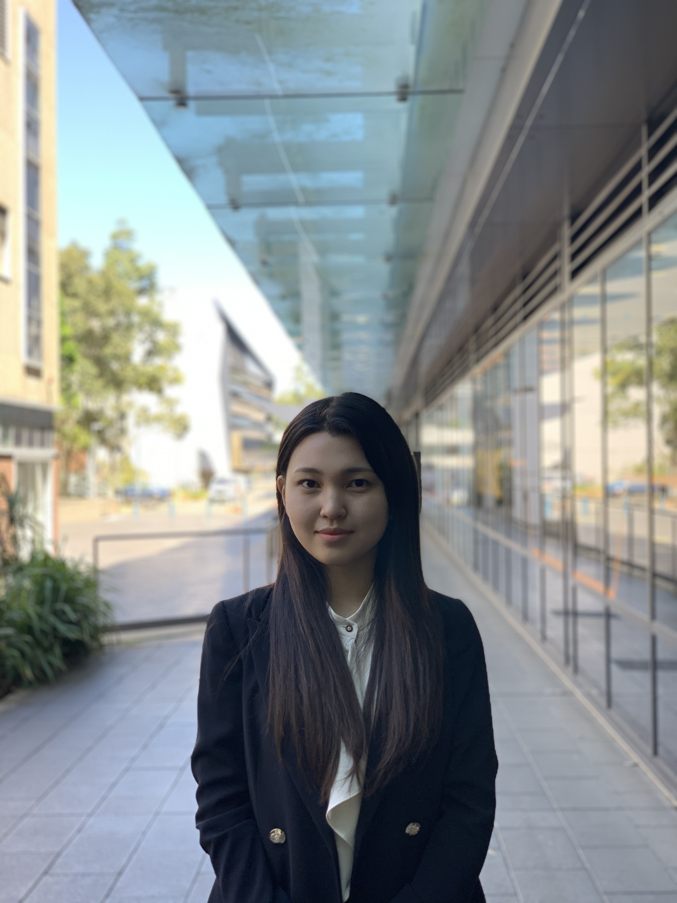
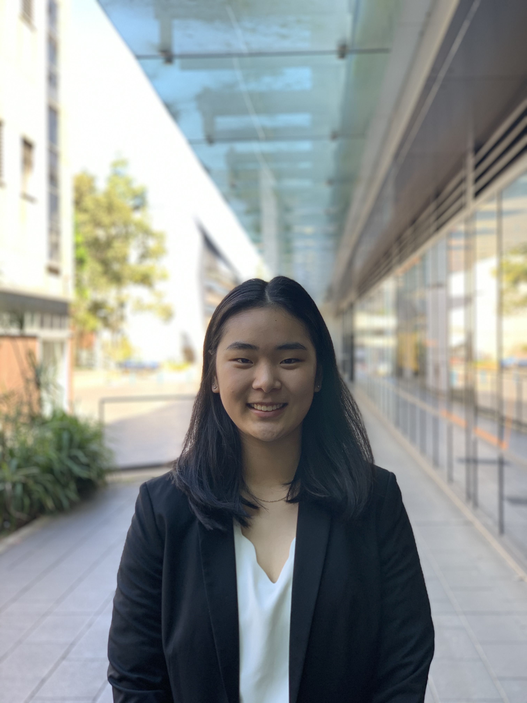
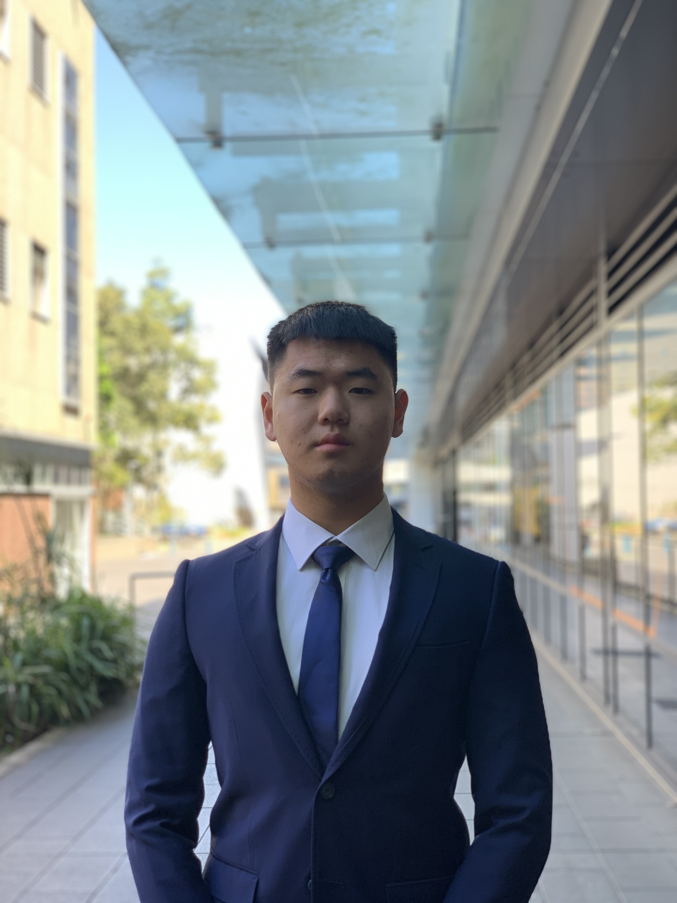

About the Team
The educational events team is an essential part of AccSoc in creating events catered to student’s educational and personal development. As a team, we will be inventing new ways to enhance the learning experience for accounting students, as well as gaining further knowledge on the many opportunities of an accounting degree. As a subcommittee member, you will be assisting in the organisation and execution of these events, developing essential skills for the professional workforce such as organisation, communication and time management.
Educational Events Directors
Catherine Kwon: School of Accounting
Main point of contact for the UNSW School of Accounting.
Rachel Li: Career Accelerator
Main point of contact for UNSW Career Acceleratior.
Roy Chen: Administration
In charge of the main administraion work.
Educational Events Subcommittee
Committment Levels
Medium-High (At least 4-5 hours per week)
Responsibiliites
The subcommittee will play a crucial role in the success of the educational events.
Required Recommended Skills